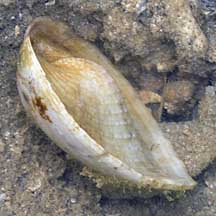
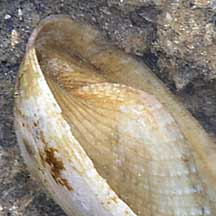
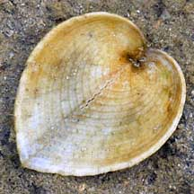
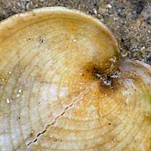
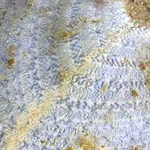
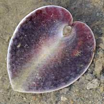
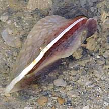
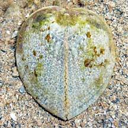

|
|
| bivalves text index | photo index |
| Phylum Mollusca > Class Bivalvia > Family Cardiidae |
| Heart
cockle Corculum cardissa Family Cardiidae updated May 2020 Where seen? This intriguing clam is sometimes seen on our Southern shores, near reefs. Sometimes on the sand, on rubble or among seagrasses. Elsewhere, often found on sandy bottoms often associated with reefs, sometimes in dense colonies. Features: 4-6cm. The two-part shell is thin and heart-shaped with the opening of the valves down the centre of the 'heart'. The colour may be dull yellowish, pinkish to white, sometimes with bright flecks of red and yellow. Sometimes with bright blue underside and rose-pink upperside. The clam attaches itself to a hard surface with small byssus threads from the underside. |
|
 Concave on upperside, convex on underside.  Pulau Semakau, Feb 09 |
 Underside.  Pulau Semakau, Feb 09 |
 Upperside with translucent 'windows'.  Pulau Semakau, Feb 09 |
| What does it eat? Unlike most
other bivalves, the heart cockle harbours symbiotic zooxanthellae (a
kind of single-celled algae) in its body. The zooxanthellae
produce food through photosynthesis which it shares with the clam.
To maximise the productivity of its "farm", the upperside of its shell has translucent 'windows' to let sunlight through the shell. In this habit, it is similar to Giant clams. It also filter feeds - when submerged, it opens the valves on the underside slightly and sucks in water to filter out edible bits. Human uses: It is collected for shell craft. |
 Convex side. Pulau Semakau, Feb 09 |
 Flat side. |
 Side view. |
| Heart cockles on Singapore shores |
On wildsingapore
flickr
|
| Other sightings on Singapore shores |
 Pulau Senang, Jun 10 |
|
Links
References
|